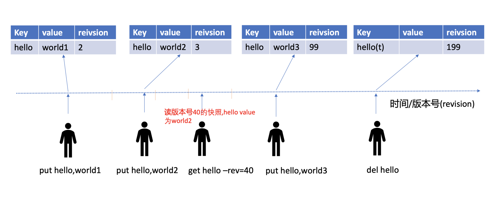
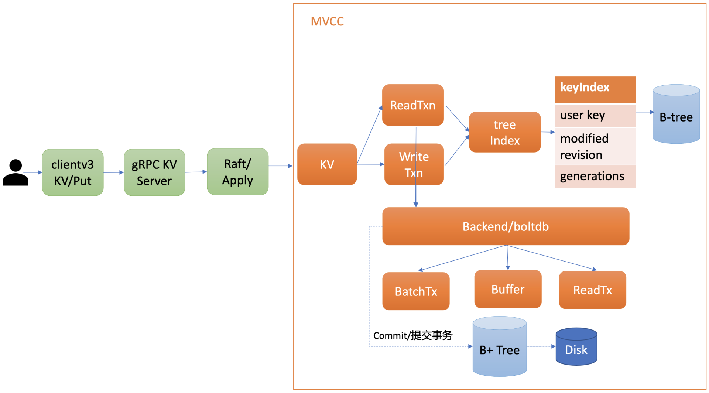
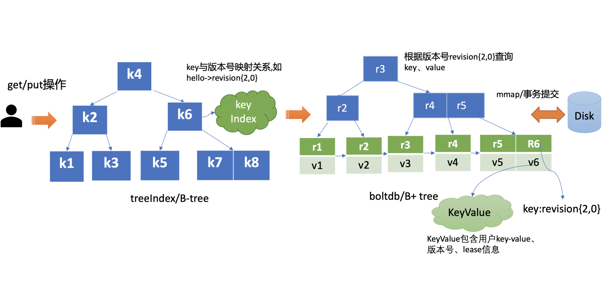
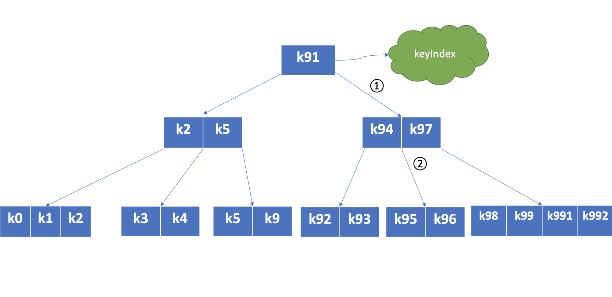
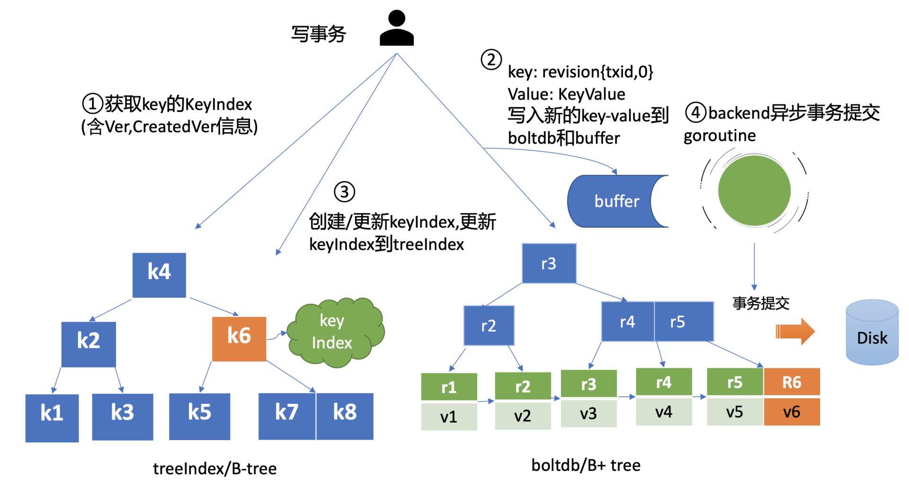
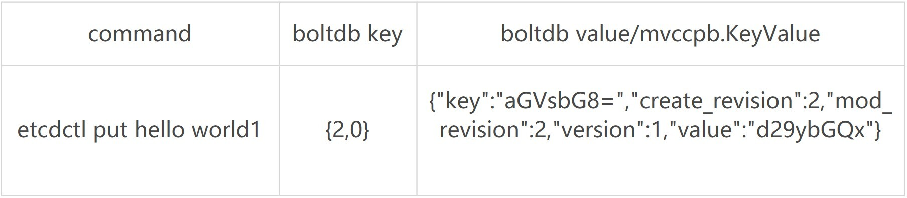
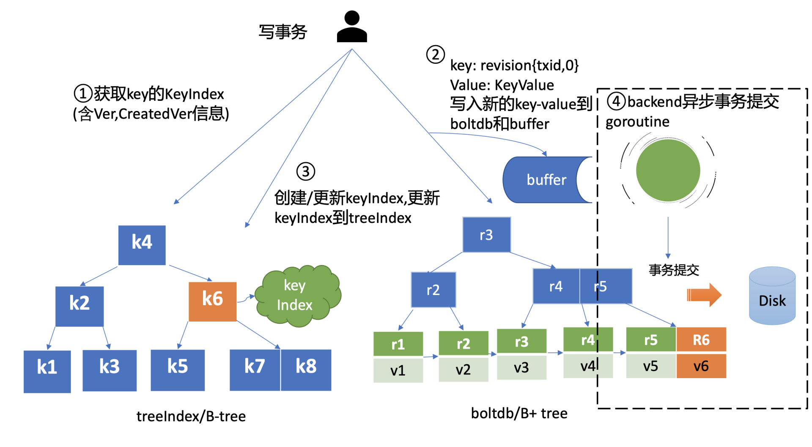
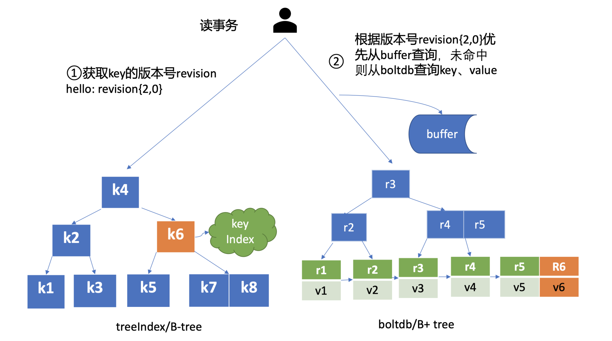
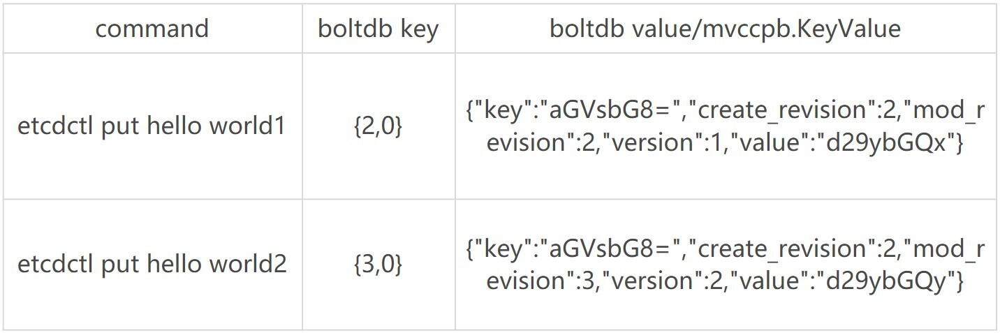
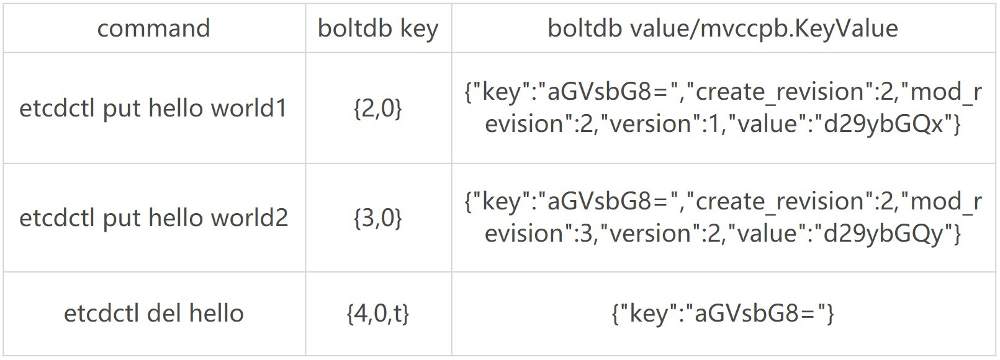

- 00 开篇词 为什么你要学习etcd_.md.html
- 01 etcd的前世今生：为什么Kubernetes使用etcd？.md.html
- 02 基础架构：etcd一个读请求是如何执行的？.md.html
- 03 基础架构：etcd一个写请求是如何执行的？.md.html
- 04 Raft协议：etcd如何实现高可用、数据强一致的？.md.html
- 05 鉴权：如何保护你的数据安全？.md.html
- 06 租约：如何检测你的客户端存活？.md.html
- 07 MVCC：如何实现多版本并发控制？.md.html
- 08 Watch：如何高效获取数据变化通知？.md.html
- 09 事务：如何安全地实现多key操作？.md.html
- 10 boltdb：如何持久化存储你的key-value数据？.md.html
- 11 压缩：如何回收旧版本数据？.md.html
- 12 一致性：为什么基于Raft实现的etcd还会出现数据不一致？.md.html
- 13 db大小：为什么etcd社区建议db大小不超过8G？.md.html
- 14 延时：为什么你的etcd请求会出现超时？.md.html
- 15 内存：为什么你的etcd内存占用那么高？.md.html
- 16 性能及稳定性（上）：如何优化及扩展etcd性能？.md.html
- 17 性能及稳定性（下）：如何优化及扩展etcd性能_.md.html
- 18 实战：如何基于Raft从0到1构建一个支持多存储引擎分布式KV服务？.md.html
- 19 Kubernetes基础应用：创建一个Pod背后etcd发生了什么？.md.html
- 20 Kubernetes高级应用：如何优化业务场景使etcd能支撑上万节点集群？.md.html
- 21 分布式锁：为什么基于etcd实现分布式锁比Redis锁更安全？.md.html
- 22 配置及服务发现：解析etcd在API Gateway开源项目中应用.md.html
- 23 选型：etcd_ZooKeeper_Consul等我们该如何选择？.md.html
- 24 运维：如何构建高可靠的etcd集群运维体系？.md.html
- 特别放送 成员变更：为什么集群看起来正常，移除节点却会失败呢？.md.html
- 结束语 搞懂etcd，掌握通往分布式存储系统之门的钥匙.md.html
- 捐赠
07 MVCC：如何实现多版本并发控制？
你好，我是唐聪。
在01课里，我和你介绍etcd v2时，提到过它存在的若干局限，如仅保留最新版本key-value数据、丢弃历史版本。而etcd核心特性watch又依赖历史版本，因此etcd v2为了缓解这个问题，会在内存中维护一个较短的全局事件滑动窗口，保留最近的1000条变更事件。但是在集群写请求较多等场景下，它依然无法提供可靠的Watch机制。
那么不可靠的etcd v2事件机制，在etcd v3中是如何解决的呢？
我今天要和你分享的MVCC（Multiversion concurrency control）机制，正是为解决这个问题而诞生的。
MVCC机制的核心思想是保存一个key-value数据的多个历史版本，etcd基于它不仅实现了可靠的Watch机制，避免了client频繁发起List Pod等expensive request操作，保障etcd集群稳定性。而且MVCC还能以较低的并发控制开销，实现各类隔离级别的事务，保障事务的安全性，是事务特性的基础。
希望通过本节课，帮助你搞懂MVCC含义和MVCC机制下key-value数据的更新、查询、删除原理，了解treeIndex索引模块、boltdb模块是如何相互协作，实现保存一个key-value数据多个历史版本。
什么是MVCC
首先和你聊聊什么是MVCC，从名字上理解，它是一个基于多版本技术实现的一种并发控制机制。那常见的并发机制有哪些？MVCC的优点在哪里呢？
提到并发控制机制你可能就没那么陌生了，比如数据库中的悲观锁，也就是通过锁机制确保同一时刻只能有一个事务对数据进行修改操作，常见的实现方案有读写锁、互斥锁、两阶段锁等。
悲观锁是一种事先预防机制，它悲观地认为多个并发事务可能会发生冲突，因此它要求事务必须先获得锁，才能进行修改数据操作。但是悲观锁粒度过大、高并发场景下大量事务会阻塞等，会导致服务性能较差。
MVCC机制正是基于多版本技术实现的一种乐观锁机制，它乐观地认为数据不会发生冲突，但是当事务提交时，具备检测数据是否冲突的能力。
在MVCC数据库中，你更新一个key-value数据的时候，它并不会直接覆盖原数据，而是新增一个版本来存储新的数据，每个数据都有一个版本号。版本号它是一个逻辑时间，为了方便你深入理解版本号意义，在下面我给你画了一个etcd MVCC版本号时间序列图。
从图中你可以看到，随着时间增长，你每次修改操作，版本号都会递增。每修改一次，生成一条新的数据记录。当你指定版本号读取数据时，它实际上访问的是版本号生成那个时间点的快照数据。当你删除数据的时候，它实际也是新增一条带删除标识的数据记录。

MVCC特性初体验
了解完什么是MVCC后，我先通过几个简单命令，带你初体验下MVCC特性，看看它是如何帮助你查询历史修改记录，以及找回不小心删除的key的。
启动一个空集群，更新两次key hello后，如何获取key hello的上一个版本值呢？ 删除key hello后，还能读到历史版本吗?
如下面的命令所示，第一次key hello更新完后，我们通过get命令获取下它的key-value详细信息。正如你所看到的，除了key、value信息，还有各类版本号，我后面会详细和你介绍它们的含义。这里我们重点关注mod_revision，它表示key最后一次修改时的etcd版本号。
当我们再次更新key hello为world2后，然后通过查询时指定key第一次更新后的版本号，你会发现我们查询到了第一次更新的值，甚至我们执行删除key hello后，依然可以获得到这个值。那么etcd是如何实现的呢?
# 更新key hello为world1
$ etcdctl put hello world1
OK
# 通过指定输出模式为json,查看key hello更新后的详细信息
$ etcdctl get hello -w=json
{
"kvs":[
{
"key":"aGVsbG8=",
"create_revision":2,
"mod_revision":2,
"version":1,
"value":"d29ybGQx"
}
],
"count":1
}
# 再次修改key hello为world2
$ etcdctl put hello world2
OK
# 确认修改成功,最新值为wolrd2
$ etcdctl get hello
hello
world2
# 指定查询版本号,获得了hello上一次修改的值
$ etcdctl get hello --rev=2
hello
world1
# 删除key hello
$ etcdctl del hello
1
# 删除后指定查询版本号3,获得了hello删除前的值
$ etcdctl get hello --rev=3
hello
world2
整体架构
在详细和你介绍etcd如何实现MVCC特性前，我先和你从整体上介绍下MVCC模块。下图是MVCC模块的一个整体架构图，整个MVCC特性由treeIndex、Backend/boltdb组成。
当你执行MVCC特性初体验中的put命令后，请求经过gRPC KV Server、Raft模块流转，对应的日志条目被提交后，Apply模块开始执行此日志内容。

Apply模块通过MVCC模块来执行put请求，持久化key-value数据。MVCC模块将请求请划分成两个类别，分别是读事务（ReadTxn）和写事务（WriteTxn）。读事务负责处理range请求，写事务负责put/delete操作。读写事务基于treeIndex、Backend/boltdb提供的能力，实现对key-value的增删改查功能。
treeIndex模块基于内存版B-tree实现了key索引管理，它保存了用户key与版本号（revision）的映射关系等信息。
Backend模块负责etcd的key-value持久化存储，主要由ReadTx、BatchTx、Buffer组成，ReadTx定义了抽象的读事务接口，BatchTx在ReadTx之上定义了抽象的写事务接口，Buffer是数据缓存区。
etcd设计上支持多种Backend实现，目前实现的Backend是boltdb。boltdb是一个基于B+ tree实现的、支持事务的key-value嵌入式数据库。
treeIndex与boltdb关系你可参考下图。当你发起一个get hello命令时，从treeIndex中获取key的版本号，然后再通过这个版本号，从boltdb获取value信息。boltdb的value是包含用户key-value、各种版本号、lease信息的结构体。

接下来我和你重点聊聊treeIndex模块的原理与核心数据结构。
treeIndex原理
为什么需要treeIndex模块呢?
对于etcd v2来说，当你通过etcdctl发起一个put hello操作时，etcd v2直接更新内存树，这就导致历史版本直接被覆盖，无法支持保存key的历史版本。在etcd v3中引入treeIndex模块正是为了解决这个问题，支持保存key的历史版本，提供稳定的Watch机制和事务隔离等能力。
那etcd v3又是如何基于treeIndex模块，实现保存key的历史版本的呢?
在02节课里，我们提到过etcd在每次修改key时会生成一个全局递增的版本号（revision），然后通过数据结构B-tree保存用户key与版本号之间的关系，再以版本号作为boltdb key，以用户的key-value等信息作为boltdb value，保存到boltdb。
下面我就为你介绍下，etcd保存用户key与版本号映射关系的数据结构B-tree，为什么etcd使用它而不使用哈希表、平衡二叉树？
从etcd的功能特性上分析， 因etcd支持范围查询，因此保存索引的数据结构也必须支持范围查询才行。所以哈希表不适合，而B-tree支持范围查询。
从性能上分析，平横二叉树每个节点只能容纳一个数据、导致树的高度较高，而B-tree每个节点可以容纳多个数据，树的高度更低，更扁平，涉及的查找次数更少，具有优越的增、删、改、查性能。
Google的开源项目btree，使用Go语言实现了一个内存版的B-tree，对外提供了简单易用的接口。etcd正是基于btree库实现了一个名为treeIndex的索引模块，通过它来查询、保存用户key与版本号之间的关系。
下图是个最大度（degree > 1，简称d）为5的B-tree，度是B-tree中的一个核心参数，它决定了你每个节点上的数据量多少、节点的“胖”、“瘦”程度。
从图中你可以看到，节点越胖，意味着一个节点可以存储更多数据，树的高度越低。在一个度为d的B-tree中，节点保存的最大key数为2d - 1，否则需要进行平衡、分裂操作。这里你要注意的是在etcd treeIndex模块中，创建的是最大度32的B-tree，也就是一个叶子节点最多可以保存63个key。

从图中你可以看到，你通过put/txn命令写入的一系列key，treeIndex模块基于B-tree将其组织起来，节点之间基于用户key比较大小。当你查找一个key k95时，通过B-tree的特性，你仅需通过图中流程1和2两次快速比较，就可快速找到k95所在的节点。
在treeIndex中，每个节点的key是一个keyIndex结构，etcd就是通过它保存了用户的key与版本号的映射关系。
那么keyIndex结构包含哪些信息呢？下面是字段说明，你可以参考一下。
type keyIndex struct {
key []byte //用户的key名称，比如我们案例中的"hello"
modified revision //最后一次修改key时的etcd版本号,比如我们案例中的刚写入hello为world1时的，版本号为2
generations []generation //generation保存了一个key若干代版本号信息，每代中包含对key的多次修改的版本号列表
}
keyIndex中包含用户的key、最后一次修改key时的etcd版本号、key的若干代（generation）版本号信息，每代中包含对key的多次修改的版本号列表。那我们要如何理解generations？为什么它是个数组呢?
generations表示一个key从创建到删除的过程，每代对应key的一个生命周期的开始与结束。当你第一次创建一个key时，会生成第0代，后续的修改操作都是在往第0代中追加修改版本号。当你把key删除后，它就会生成新的第1代，一个key不断经历创建、删除的过程，它就会生成多个代。
generation结构详细信息如下：
type generation struct {
ver int64 //表示此key的修改次数
created revision //表示generation结构创建时的版本号
revs []revision //每次修改key时的revision追加到此数组
}
generation结构中包含此key的修改次数、generation创建时的版本号、对此key的修改版本号记录列表。
你需要注意的是版本号（revision）并不是一个简单的整数，而是一个结构体。revision结构及含义如下：
type revision struct {
main int64 // 一个全局递增的主版本号，随put/txn/delete事务递增，一个事务内的key main版本号是一致的
sub int64 // 一个事务内的子版本号，从0开始随事务内put/delete操作递增
}
revision包含main和sub两个字段，main是全局递增的版本号，它是个etcd逻辑时钟，随着put/txn/delete等事务递增。sub是一个事务内的子版本号，从0开始随事务内的put/delete操作递增。
比如启动一个空集群，全局版本号默认为1，执行下面的txn事务，它包含两次put、一次get操作，那么按照我们上面介绍的原理，全局版本号随读写事务自增，因此是main为2，sub随事务内的put/delete操作递增，因此key hello的revison为{2,0}，key world的revision为{2,1}。
$ etcdctl txn -i
compares:
success requests (get，put，del):
put hello 1
get hello
put world 2
介绍完treeIndex基本原理、核心数据结构后，我们再看看在MVCC特性初体验中的更新、查询、删除key案例里，treeIndex与boltdb是如何协作，完成以上key-value操作的?
MVCC更新key原理
当你通过etcdctl发起一个put hello操作时，如下面的put事务流程图流程一所示，在put写事务中，首先它需要从treeIndex模块中查询key的keyIndex索引信息，keyIndex中存储了key的创建版本号、修改的次数等信息，这些信息在事务中发挥着重要作用，因此会存储在boltdb的value中。
在我们的案例中，因为是第一次创建hello key，此时keyIndex索引为空。

其次etcd会根据当前的全局版本号（空集群启动时默认为1）自增，生成put hello操作对应的版本号revision{2,0}，这就是boltdb的key。
boltdb的value是mvccpb.KeyValue结构体，它是由用户key、value、create_revision、mod_revision、version、lease组成。它们的含义分别如下：
- create_revision表示此key创建时的版本号。在我们的案例中，key hello是第一次创建，那么值就是2。当你再次修改key hello的时候，写事务会从treeIndex模块查询hello第一次创建的版本号，也就是keyIndex.generations[i].created字段，赋值给create_revision字段；
- mod_revision表示key最后一次修改时的版本号，即put操作发生时的全局版本号加1；
- version表示此key的修改次数。每次修改的时候，写事务会从treeIndex模块查询hello已经历过的修改次数，也就是keyIndex.generations[i].ver字段，将ver字段值加1后，赋值给version字段。
填充好boltdb的KeyValue结构体后，这时就可以通过Backend的写事务batchTx接口将key{2,0},value为mvccpb.KeyValue保存到boltdb的缓存中，并同步更新buffer，如上图中的流程二所示。
此时存储到boltdb中的key、value数据如下：

然后put事务需将本次修改的版本号与用户key的映射关系保存到treeIndex模块中，也就是上图中的流程三。
因为key hello是首次创建，treeIndex模块它会生成key hello对应的keyIndex对象，并填充相关数据结构。
keyIndex填充后的结果如下所示：
key hello的keyIndex:
key: "hello"
modified: <2,0>
generations:
[{ver:1,created:<2,0>,revisions: [<2,0>]} ]
我们来简易分析一下上面的结果。
- key为hello，modified为最后一次修改版本号<2,0>，key hello是首次创建的，因此新增一个generation代跟踪它的生命周期、修改记录；
- generation的ver表示修改次数，首次创建为1，后续随着修改操作递增；
- generation.created表示创建generation时的版本号为<2,0>；
- revision数组保存对此key修改的版本号列表，每次修改都会将将相应的版本号追加到revisions数组中。
通过以上流程，一个put操作终于完成。
但是此时数据还并未持久化，为了提升etcd的写吞吐量、性能，一般情况下（默认堆积的写事务数大于1万才在写事务结束时同步持久化），数据持久化由Backend的异步goroutine完成，它通过事务批量提交，定时将boltdb页缓存中的脏数据提交到持久化存储磁盘中，也就是下图中的黑色虚线框住的流程四。

MVCC查询key原理
完成put hello为world1操作后，这时你通过etcdctl发起一个get hello操作，MVCC模块首先会创建一个读事务对象（TxnRead），在etcd 3.4中Backend实现了ConcurrentReadTx， 也就是并发读特性。
并发读特性的核心原理是创建读事务对象时，它会全量拷贝当前写事务未提交的buffer数据，并发的读写事务不再阻塞在一个buffer资源锁上，实现了全并发读。

如上图所示，在读事务中，它首先需要根据key从treeIndex模块获取版本号，因我们未带版本号读，默认是读取最新的数据。treeIndex模块从B-tree中，根据key查找到keyIndex对象后，匹配有效的generation，返回generation的revisions数组中最后一个版本号{2,0}给读事务对象。
读事务对象根据此版本号为key，通过Backend的并发读事务（ConcurrentReadTx）接口，优先从buffer中查询，命中则直接返回，否则从boltdb中查询此key的value信息。
那指定版本号读取历史记录又是怎么实现的呢？
当你再次发起一个put hello为world2修改操作时，key hello对应的keyIndex的结果如下面所示，keyIndex.modified字段更新为<3,0>，generation的revision数组追加最新的版本号<3,0>，ver修改为2。
key hello的keyIndex:
key: "hello"
modified: <3,0>
generations:
[{ver:2,created:<2,0>,revisions: [<2,0>,<3,0>]}]
boltdb插入一个新的key revision{3,0}，此时存储到boltdb中的key-value数据如下：

这时你再发起一个指定历史版本号为2的读请求时，实际是读版本号为2的时间点的快照数据。treeIndex模块会遍历generation内的历史版本号，返回小于等于2的最大历史版本号，在我们这个案例中，也就是revision{2,0}，以它作为boltdb的key，从boltdb中查询出value即可。
MVCC删除key原理
介绍完MVCC更新、查询key的原理后，我们接着往下看。当你执行etcdctl del hello命令时，etcd会立刻从treeIndex和boltdb中删除此数据吗？还是增加一个标记实现延迟删除（lazy delete）呢？
答案为etcd实现的是延期删除模式，原理与key更新类似。
与更新key不一样之处在于，一方面，生成的boltdb key版本号{4,0,t}追加了删除标识（tombstone,简写t），boltdb value变成只含用户key的KeyValue结构体。另一方面treeIndex模块也会给此key hello对应的keyIndex对象，追加一个空的generation对象，表示此索引对应的key被删除了。
当你再次查询hello的时候，treeIndex模块根据key hello查找到keyindex对象后，若发现其存在空的generation对象，并且查询的版本号大于等于被删除时的版本号，则会返回空。
etcdctl hello操作后的keyIndex的结果如下面所示：
key hello的keyIndex:
key: "hello"
modified: <4,0>
generations:
[
{ver:3,created:<2,0>,revisions: [<2,0>,<3,0>,<4,0>(t)]}，
{empty}
]
boltdb此时会插入一个新的key revision{4,0,t}，此时存储到boltdb中的key-value数据如下：

那么key打上删除标记后有哪些用途呢？什么时候会真正删除它呢？
一方面删除key时会生成events，Watch模块根据key的删除标识，会生成对应的Delete事件。
另一方面，当你重启etcd，遍历boltdb中的key构建treeIndex内存树时，你需要知道哪些key是已经被删除的，并为对应的key索引生成tombstone标识。而真正删除treeIndex中的索引对象、boltdb中的key是通过压缩(compactor)组件异步完成。
正因为etcd的删除key操作是基于以上延期删除原理实现的，因此只要压缩组件未回收历史版本，我们就能从etcd中找回误删的数据。
小结
最后我们来小结下今天的内容，我通过MVCC特性初体验中的更新、查询、删除key案例，为你分析了MVCC整体架构、核心模块，它由treeIndex、boltdb组成。
treeIndex模块基于Google开源的btree库实现，它的核心数据结构keyIndex，保存了用户key与版本号关系。每次修改key都会生成新的版本号，生成新的boltdb key-value。boltdb的key为版本号，value包含用户key-value、各种版本号、lease的mvccpb.KeyValue结构体。
当你未带版本号查询key时，etcd返回的是key最新版本数据。当你指定版本号读取数据时，etcd实际上返回的是版本号生成那个时间点的快照数据。
删除一个数据时，etcd并未真正删除它，而是基于lazy delete实现的异步删除。删除原理本质上与更新操作类似，只不过boltdb的key会打上删除标记，keyIndex索引中追加空的generation。真正删除key是通过etcd的压缩组件去异步实现的，在后面的课程里我会继续和你深入介绍。
基于以上原理特性的实现，etcd实现了保存key历史版本的功能，是高可靠Watch机制的基础。基于key-value中的各种版本号信息，etcd可提供各种级别的简易事务隔离能力。基于Backend/boltdb提供的MVCC机制，etcd可实现读写不冲突。
思考题
你认为etcd为什么删除使用lazy delete方式呢？ 相比同步delete,各有什么优缺点？当你突然删除大量key后，db大小是立刻增加还是减少呢？
感谢你的阅读，如果你认为这节课的内容有收获，也欢迎把它分享给你的朋友，谢谢。
© 2019 - 2023 Liangliang Lee. Powered by gin and hexo-theme-book.